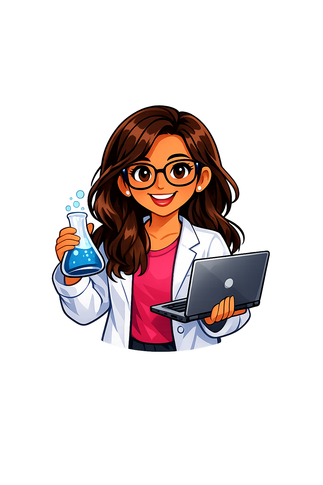

Hi! I’m Leara Kapuriya — the heart behind STEM Sister. I built this space to make science and technology exciting, creative, and accessible for every child, especially girls who dream of shaping the future.
I often wished for a space where learning science and technology felt exciting, colorful, and welcoming. That dream inspired me to build STEM Sister — a platform that blends education with creativity.
Learning should never feel intimidating. Instead, it should spark curiosity, joy, and confidence. Through STEM Sister, I share resources, quizzes, and interactive lessons that make STEM approachable and engaging.
Encouraging children to ask questions, explore ideas, and discover the joy of learning.
Creating a safe, supportive space where girls feel confident to pursue STEM dreams.
Making resources available to underprivileged children so no one is left behind.
Showing how science, technology, engineering, and math connect beautifully with art and imagination.